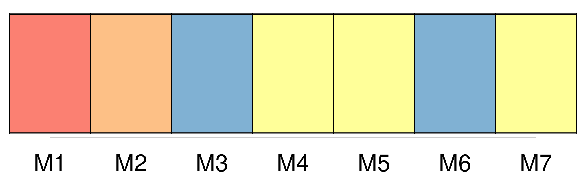
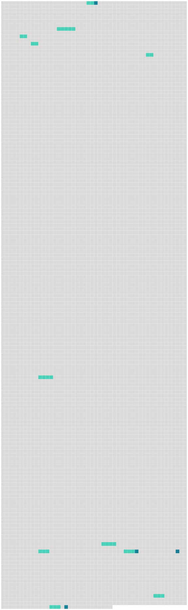

Longueur nb maillons : 15 mentions |
  |
Une porte verte, dont la serge avait jauni et n'était plus retenue que par quelques clous dédorés, donnait passage dans [une pièce] [qui] avait pu servir de salle à manger aux temps fabuleux où l'on mangeait dans ce logis désert. [5 phrases] Le soir, [cette galerie muette et immobile] devait se transformer, aux reflets incertains des lampes, en une file de fantômes terrifiants et ridicules à la fois. [3 phrases] Au milieu de [la salle] figurait une table en poirier noirci, aux pieds tournés en spirales comme des colonnes salomoniques, que les tarets avaient piquée de milliers de trous, sans être troublés dans leur travail silencieux. [1 phrases]
Deux dressoirs ou crédences de même matière, ornés de quelques sculptures et probablement achetés en même temps que la table à des époques plus heureuses, se faisaient pendants d'un côté de [la salle] à l'autre ; des faïences égueulées, des verreries disparates et deux ou trois rustiques figurines de Bernard Palissy représentant des anguilles, des poissons, des crabes et des coquillages émaillés sur un fond de verdure, garnissaient misérablement le vide des planches. [2 phrases] De [cette salle] on pénétrait dans une autre un peu moins grande. [99 phrases]
Pierre, se baissant au foyer, alluma un éclat de bois de pin enduit de résine, sorte de chandelle économique qu'emploient les pauvres paysans, et se mit à précéder le jeune seigneur ; Miraut et Béelzébuth se joignirent au cortège : la lueur fumeuse de la torche faisait vaciller sur les murailles de l'escalier les fresques pâlies et donnait une apparence de vie aux portraits enfumés de [la salle à manger] dont les yeux noirs et fixes semblaient lancer un regard de pitié douloureuse sur leur descendant. [64 phrases] Les bœufs dételés allèrent prendre place à l'écurie à côté du bidet blanc ; les comédiennes sautèrent à bas de la charrette, faisant bouffer leurs jupes fripées, et montèrent, guidées par Sigognac, dans [la salle à manger] , la pièce la plus habitable de la maison. [1 phrases]
Quoiqu'on ne fût encore qu'au début de l'automne, un peu de feu était nécessaire pour sécher les vêtements humides de ces dames ; d'ailleurs la nuit était fraîche et l'air sifflait par les boiseries disjointes de [cette pièce inhabitée]
Les comédiens, bien qu'habitués par leur vie errante aux gîtes les plus divers, regardaient avec étonnement [cet étrange logis] [que] les hommes semblaient avoir abandonné depuis longtemps aux esprits et [qui] faisait naître involontairement des idées d'histoires tragiques ; pourtant ils n'en témoignaient, en personnes bien élevées, ni terreur ni surprise. [15 phrases] À leur clarté et à celle des bourrées flambantes, [la chambre morte] avait repris une espèce de vie. [1 phrases] Un air plus tiède et plus vivace circulait dans [cette vaste salle] , [où] l'on ne respirait habituellement que l'humidité moisie du sépulcre. |
 |
La ressource peut être téléchargée sur la page Ortolang
Si vous avez des questions ou vous voyez des erreurs, merci d'envoyer un mail à silvia.federzoni89@gmail.com
Site développé par S. Federzoni (contact)